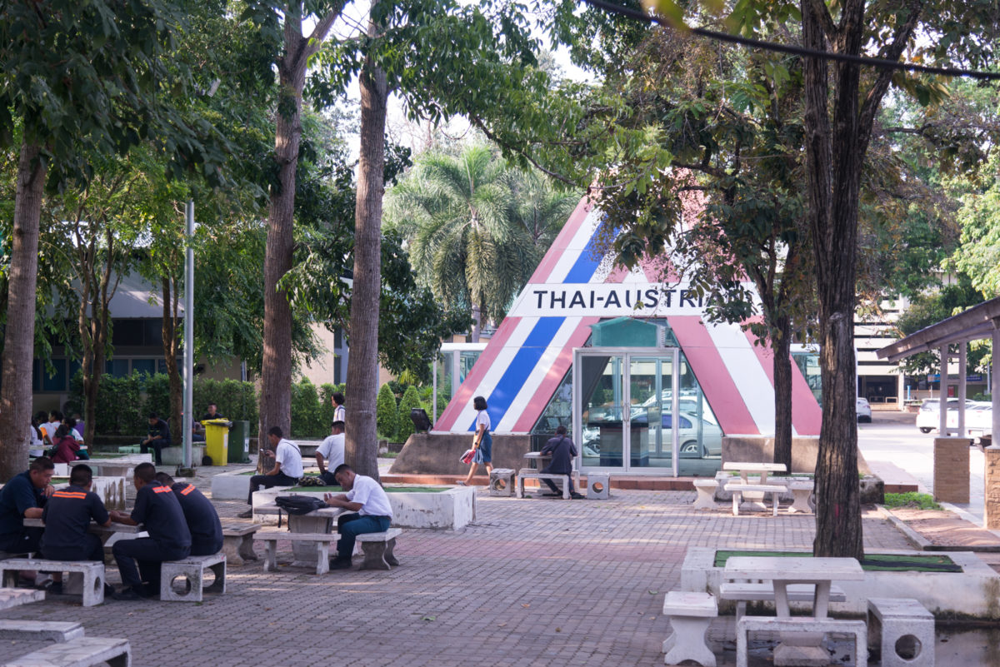

ที่ตั้ง
เลขที่ 193 หมู่ 3 ถนนสุขุมวิท ต.นาจอมเทียน อ.สัตหีบ จ.ชลบุรี มีเนื้อที่ 64 ไร่ 3 งาน 20 ตารางวา
วัตถุประสงค์
1. เพื่อผลิตช่างเทคนิคให้สอดคล้องกับความต้องการของสถานประกอบการ
2. เพื่อให้นักเรียนนัก-ศึกษา เกิดทักษะตรงกับมาตราฐานช่างเทคนิค และสถานประกอบการ
3. เพื่อพัฒนาแผนการเรียนการสอนกับช่างอุตสาหกรรมให้สอดคล้องกับการพัฒนา ในภาคตะวันออก
ประวัติความเป็นมา
วิทยาลัยเทคนิคสัตหีบก่อตั้งเมือวันที่ 1 กันยายน พศ. 2512 ภายใต้โดยความร่วมมือระหว่างรัฐบาลไทยและรัฐบาลสาธารณรัฐออสเตรียในสมัยนั้น
ใช้ชื่อภาษาอังกฤษว่า Thai-Austrian Technical School. ภาษาไทยคือ โรงเรียนเทคนิคสัตหีบ ณ บ้านอำเภอ ต.นาจอมเทียน อ.สัตหีบ จ.ชลบุรี
วันที่ 11 ตุลาคม พ.ศ. 2520 กรมอาชีวศึกษาได้จัดพิธีรับมอบอุปกรณ์ให้กับโรงเรียนเทคนิคสัตหีบ อย่างเป็นทางการโดย Mr.Kari Peterlik
เอกอัครราชทูตออสเตรียประจำประเทศไทยผู้แทนรัฐบาลสาธารณรัฐออสเตรีย เป็นผู้มอบ นายภิญโญ สาธร รัฐมนตรีกระทรวงศึกษาธิการ
ในขณะนั้นเป็นผู้แทนรัฐบาลไทยเป็นผู้รับมอบ
วันที่ 2 สิงหาคม พศ. 2522 กระทรวงศึกษาธิการ ประกาศยกระดับสถานศึกษาจากโรงเรียนเทคนิคสัตหีบ เป็น วิทยาลัยเทคนิคสัตหีบ ใช้ชื่อภาษาอังกฤษว่า
Thai - Austrian Technical College (TATC)
ในปีพุทธศักราช 2527 เนื่องในโอกาสที่กรุงเทพมหานครครบรอบ 200 ปี สาธารณรัฐออสเตรียได้บริจาคเครื่องจักรและอุปกรณ์เพิ่มเติม
ให้แก่วิทยาลัยเทคนิคสัตหีบ รวมมูลค่า 2 ล้านบาท
วันที่ 12 กุมภาพันธ์ พ.ศ. 2533 ได้มีการลงนามในบันทึกข้อตกลง ระหว่าง Mr.Hoch Lenitner ผู้แทนระดับสูงของรัฐบาลสาธารณรัฐออสเตรีย
ร่วมกับนายบุญเทียม เจริญยิ่ง อธิบดีกรมอาชีวศึกษาและผู้แทนรัฐบาลไทย เพื่อสานต่อวิทยาลัยฯ ในโครงการให้ความช่วยเหลือ ตั้งแต่ปี 2533 ถึง 2537
โดยมี ฯพลฯ Dr.Alois Mock รัฐมนตรีว่าการกระทรวงต่างประเทศของออสเตรียร่วมเป็นสักขีพยาน โครงการนี้ได้แบ่งการจัดส่งเครื่องจักรอุปกรณ์ออกเป็น 4 ระยะดังนี้
- ระยะที่ 1 เดือนสิงหาคม พ.ศ. 2533 จัดส่งอะไหล่และอุปกรณ์บางอย่างมาเพื่อช่วยซ่อมเครื่องจักร อุปกรณ์เดิมที่ซึ่งชำรุดและเพิ่มเติมอุปกรณ์และเครื่องจักร
คิดเป็นเงิน 2,477,450.62 บาท และวันที่ 19 พฤศจิกายน พ.ศ. 2533 มอบเงินจำนวน 991,872.52 บาท ให้วิทยาลัยฯ ดำเนินการซื้อเครื่องจักรอุปกรณ์ภายในประเทศ
- ระยะที่ 2 เดือนกุมภาพันธ์ พ.ศ. 2533 ได้จัดส่งอะไหล่และอุปกรณ์เพิ่มเติมเป็นเงิน 8,335,934.74 บาท
- ระยะที่ 3 เดือนพฤษภาคม พ.ศ. 2539 จัดส่งเครื่องจักรอุปกรณ์ ที่ทันสมัยเป็นเงิน 8,335,160.66 บาท และผู้เชี่ยวชาญจำนวน 4 คน มาดำเนินการติดตั้งอุปกรณ์ และแนะนำการใช้
- ระยะที่ 4 เดือนกันยายน พ.ศ. 2539 จัดส่งเครื่องจักรอุปกรณ์ที่ทันสมัยมาเพิ่มเติมในส่วนที่เหลือ และจะมีผู้เชียวชาญมาปฏิบัติหน้าที่อีกประมาณ 5-6 คน
และจัดพิธีมอบเครื่องจักรเครื่องมือชุดใหม่ตามโครงการให้ความช่วยเหลือครั้งที่ 2 ในวันที่ 2 พฤศจิกายน พ.ศ. 2539 คณะผู้เชี่ยวชาญชาวออสเตรียที่มาปฏิบัติงานในช่วงที่ 3 ของโครงการฯ
ระหว่างวันที่ 2 พฤษภาคม - 10 กรกฎาคม พ.ศ. 2539 มีดังนี้
1. Mr.Hermann Kotzmann หัวหน้าผู้เชี่ยวชาญ
2. Mr.Kurt Reiter ผู้เชี่ยวชาญช่างหล่อโลหะ
3. Mr.Christian Gruber ผู้เชี่ยวชาญเชื่อม
4. Mr.Gerhard Mayer ผู้เชี่ยวชาญช่างไฟฟ้า – อิเล็กทรอนิกส์
อีกทั้งในปีการศึกษา 2539 วิทยาลัยเทคนิคสัตหีบ ได้รับเลือกให้เป็นสถานศึกษาดีเด่น ฯพณฯ ท่านรัฐมนตรีว่าการกระทรวงศึกษาธิการ
นายสรอรรถ กลิ่นประทุม ได้มอบโล่รางวัลดีเด่น โดยมีนายวิชัย ป้อมประเสริฐ ผู้อำนวยการวิทยาลัยเทคนิคสัตหีบในครั้งนั้นเป็นผู้รับมอบ และวิทยาลัยเทคนิคสัตหีบ
ยังได้รับรางวัลพระราชทานจากสมเด็จพระเทพรัตนราชสุดาฯ ในปีการศึกษา 2534 ในฐานะสถานศึกษาดีเด่นในระดับอุดมศึกษาของเขตการศึกษาที่ 12 ปี พ.ศ. 2536
และเปิดทำการสอนหลักสูตรประกาศนียบัตรครูเทคนิคชั้นสูง (ปทส.) หลักสูตร 2 ปี มีฐานะเทียบเท่าระดับปริญญาตรีในสาขาวิชาเครื่องกล และเปิดสอนใน
สาขาวิชาเครื่องมือกลอีก 1 สาขา ในปีการศึกษา 2537
นอกจากนี้วิทยาลัยเทคนิคสัตหีบ ยังเป็นศูนย์การศึกษาของนักศึกษาสถาบันราชภัฏฉะเชิงเทรา (ในขณะนั้น) ในสาขาวิชาวิทยาศาสตร์โปรแกรมวิชาเทคโนโลยีอุตสาหกรรม
ซึ่งเปิดทำการเรียนการสอนตั้งแต่ ปีการศึกษา 2536 ถึงปีการศึกษา 2540 มีทั้งสิ้น 5 สาขา คือ
1. เทคโนโลยีก่อสร้าง
2. เทคโนโลยีการผลิต
3. เทคโนโลยีเครื่องกล
4. เทคโนโลยีไฟฟ้า
5. เทคโนโลยีอิเล็กทรอนิกส์
วิทยาลัยเทคนิคสัตหีบยังได้รับการคัดเลือกจากกรมอาชีวศึกษาเข้าร่วมพัฒนาเครื่องมือ อุปกรณ์ และบุคลากรในสถานศึกษา โดยได้รับเงินกู้จากสำนักงาน OECF
ประเทศญี่ปุ่น ซึ่งจะมอบให้กรมอาชีวศึกษาเป็นเงินทั้งสิ้น 1,913.3 ล้านบาท และเงินสมทบจากรัฐบาลไทยอีก 569 ล้านบาท ทั้งนี้วิทยาลัยเทคนิคสัตหีบเป็น 1 ใน 10
วิทยาลัยที่จะมีส่วนได้รับเงินจำนวนหนึ่ง จากยอดดังกล่าวจะนำมาพัฒนาแผนกช่างเทคนิคการผลิต และช่างกลโรงงานเพื่อเป็นศูนย์กลางการศึกษาในภาคตะวันออก
ระยะเวลาโครงการตั้งแต่ ปี พ.ศ. 2537-2541
ในปี พ.ศ. 2548 ตามหนังสือที่ ศธ.0604/038 สำนักนโยบายและแผนการอาชีวศึกษา สำนักงานคณะกรรมการการอาชีวศึกษา ลงวันที่ 18 มกราคม 2548
ตามความเห็นชอบจากรัฐมนตรีว่าการกระทรวงศึกษาธิการให้จัดตั้งศูนย์เครือข่ายการอาชีวศึกษานานาชาติ ณ สำนักงานคณะกรรมการการอาชีวศึกษา และในระดับภูมิภาคอีก 3 แห่ง
โดยวิทยาลัยเทคนิคสัตหีบได้รับคัดเลือกให้เป็นสถานศึกษาที่ทำหน้าที่ในการดำเนินการจัดตั้งศูนย์เครือข่ายอาชีวศึกษานานาชาติของภาคตะวันออก
ในปีพ.ศ. 2548 ได้รับยกย่องให้เป็นสถานศึกษาอาชีวะต้นแบบ (Super Model) แห่งเดียว ประเภทวิทยาลัยเทคนิค ของสำนักงานคณะกรรมการการอาชีวศึกษา
ในปีพ.ศ. 2551 วิทยาลัยฯ ได้รับเลือกจากกระทรวงศึกษาธิการ ให้เป็นสถานศึกษาดีเด่น รางวัลพระราชทาน ระดับอาชีวศึกษา โดยเข้ารับพระราชทานโล่รางวัลดีเด่นจาก
สมเด็จพระเทพ รัตนราชสุดาสยามบรมราชกุมารี โดยมีนายสมชาย ธำรงสุข ผู้อำนวยการวิทยาลัยเทคนิคสัตหีบ ในครั้งนั้น เป็นผู้เข้ารับพระราชทาน
ในปี พ.ศ. 2553 นายจักรพันธ์ เนื่องจำนงค์ นักศึกษาแผนกช่างเขียนแบบเครื่องกล วิทยาลัยเทคนิคสัตหีบ ได้รับคัดเลือกจากกระทรวงศึกษาธิการ เข้ารับเกียรติบัตรและรางวัล
พระราชทานจากสมเด็จพระเทพรัตนราชสุดา สยามบรมราชกุมาร ระดับประกาศนียบัตรวิชาชีพชั้นสูง (ปวส.) ขนาดใหญ่ ประจำปีการศึกษา 2552
ในปีการศึกษา 2555 วิทยาลัยเทคนิคสัตหีบได้พัฒนารูปแบบการเรียนการสอนแบบบูรณาการร่วมกับการทำงาน (Work-Integrated Learning – WIL)
ขึ้นด้วยความร่วมมือของ 3 ฝ่าย ประกอบด้วย สถานศึกษา สถานประกอบการ สมาคมหรือองค์กรวิชาชีพ ภายใต้ชื่อว่า สัตหีบโมเดล โดย ดร.วัชรินทร์ ศิริพานิช
ผู้อำนวยการวิทยาลัยเทคนิคสัตหีบในขณะนั้น เพื่อส่งผลให้โครงการพัฒนาระเบียงเขตพิเศษภาคตะวันออก (East Economic Corridor – EEC)
นำไปใช้เป็นแนวทางการผลิตและพัฒนาบุคลากรให้มีสมรรถนะและทักษะตรงตามความต้องการของกลุ่มอุตสาหกรรมเป้าหมายในเขต EEC โดยผู้ประกอบการที่เข้าร่วมโครงการสัตหีบ
โมเดลในปีการศึกษานั้น ได้แก่ บริษัทสยามมิชลิน จำกัด และบริษัท ทีบีเคเค (ประเทศไทย) จำกัด
ในปี พ.ศ. 2558 นายศุภวิชญ์ เกิดสมบูรณ์ นักศึกษาสาขาวิชาเมคคาทรอนิกส์ วิทยาลัยเทคนิคสัตหีบ ได้รับรางวัลพระราชทานในโครงการคัดเลือกนักเรียน - นักศึกษา
และสถานศึกษา เพื่อรับรางวัลพระราชทาน ระดับประกาศนียบัตรวิชาชีพชั้นสูง (ปวส.) ขนาดใหญ่ ประจำปีการศึกษา 2558 จากสมเด็จพระเทพรัตนราชสุดาฯ สยามบรมราชกุมารี
ณ ศาลาดุสิดาลัย พระตำหนักจิตรดารโหฐานพระราชวังดุสิต กรุงเทพมหานคร
ในปีงบประมาณ พ.ศ. 2559 สำนักงานคณะกรรมการการอาชีวศึกษา ได้ดำเนินการพิจารณาคัดเลือกสาขาวิชาและสถานศึกษาอาชีวศึกษาในการพัฒนาให้เป็นสถานศึกษา
ที่มีความเป็นเลิศเฉพาะทางให้สอดคล้องกับนโยบายรัฐบาลในการส่งเสริมการลงทุนในอุตสาหกรรมเป้าหมาย เพื่อผลิตและพัฒนากำลังคน ให้มีทักษะและความเชี่ยวชาญเฉพาะทาง
ให้สอดคล้องกับความต้องการ ของภาคอุตสาหกรรมในกลุ่ม New Growth Engine ของประเทศใน 10 อุตสาหกรรมเป้าหมาย First S-Curve และ New S-Curve 10
อุตสาหกรรมเป้าหมายที่เป็นความต้องการเร่งด่วนของประเทศ ทั้งในปัจจุบันและรองรับความต้องการในอนาคต โดยสำนักงานคณะกรรมการการอาชีวศึกษา ได้คัดเลือกสาขาวิชาขนส่งระบบราง
วิทยาลัยเทคนิคสัตหีบ เป็นหนึ่งใน 7 สาขาวิชา และหนึ่งในสถานศึกษาเฉพาะทาง (นำร่อง) จาก 7 แห่ง
ในปีงบประมาณ 2560 สาขาวิชาเมคคาทรอนิกส์ วิทยาลัยเทคนิคสัตหีบ ได้รับการพิจารณาคัดเลือก เข้าร่วมโครงการผลิตอาชีวะพันธุ์ใหม่ ปี 2561-2565 เพื่อสร้างกำลังคนที่มีสมรรถนะสูง
สำหรับอุตสาหกรรม NEW Growth Engine ตามนโยบาย Thailand 4.0 และการปฏิรูปการอุดมศึกษาไทย
ในปีงบประมาณ พ.ศ. 2561 สาขาช่างอากาศยาน วิทยาลัยเทคนิคสัตหีบ ได้รับการพิจารณาคัดเลือก จากสำนักงานคณะกรรมการการอาชีวศึกษา ให้เป็นหนึ่งในสาขาวิชาและสถานศึกษา
อาชีวศึกษาในการพัฒนาให้เป็นสถานศึกษาที่มีความเป็นเลิศเฉพาะทาง ตามโครงการส่งเสริมสถานศึกษาอาชีวศึกษาให้มีความเป็นเลิศเฉพาะทาง
ในปีการศึกษา 2563 วิทยาลัยเทคนิคสัตหีบ ได้จัดการเรียนการสอนในหลักสูตรประกาศนียบัตรวิชาชีพชั้นสูง (ปวส.) สาขาวิชาช่างอากาศยาน เพื่อผลิตและพัฒนากำลังคนด้านอุตสาหกรรมการบิน
เพื่อรองรับการพัฒนาระเบียงเศรษฐกิจพิเศษภาคตะวันออก EEC วิทยาลัยเทคนิคสัตหีบได้รับใบรับรองสถาบันฝึกอบรมและหลักสูตรด้านนายช่างภาคพื้นดิน จากสำนักงานการบินพลเรือนแห่งประเทศไทย (กพท.)
พ.ศ. 2564 จากความร่วมมือของภาคีเครือข่ายอย่างเข้มแข็ง ส่งผลให้วิทยาลัยเทคนิคสัตหีบ ได้รับคัดเลือกให้เป็นศูนย์ความเป็นเลิศทางการอาชีวศึกษา (Excellent Center) 3 สาขาวิชาได้แก่
สาขาวิชาเมคคาทรอนิกส์และหุ่นยนต์ สาขาวิชาเทคนิคควบคุมและซ่อมบำรุงระบบขนส่งทางราง และสาขาวิชาช่างอากาศยานที่ได้รับการรับรองการเป็นสถาบันฝึกอบรมนายช่างภาคพื้นดิน
จากสำนักงานการบินพลเรือนแห่งประเทศไทย (The Civil Aviation Authority of Thailand : CAAT)
นอกจากนี้วิทยาลัยเทคนิคสัตหีบยังได้รับคัดเลือกเป็น ศูนย์บริหารเครือข่ายการผลิตและพัฒนากำลังคนอาชีวศึกษา (Center of Vocational Manpower Networking Management : CVM)
ในสาขาวิชาเมคคาทรอนิกส์และหุ่นยนต์เพื่อเป็นศูนย์กลางในการผลิตและพัฒนากำลังคนที่มีสมรรถนะสูงตรงตามความต้องการของพื้นที่เศรษฐกิจพิเศษภาคตะวันออกและความต้องการกำลังคนของประเทศ
ในปีการศึกษา 2565 สาขาวิชาช่างเทคนิคโลหะ วิทยาลัยเทคนิคสัตหีบ ได้รับการประเมินให้เป็นศูนย์ทดสอบมาตรฐานฝีมือแรงงาน ในสาขาอาชีพช่างเชื่อมอาร์กโลหะด้วยมือ ระดับ 1 ,
สาขาอาชีพช่างเชื่อมทิก ระดับ 1 , สาขาอาชีพช่างเชื่อมแม็ก ระดับ 1
ในวันที่ 14 พฤศจิกายน 2565 ดร.อรทัย โยธินรุ่งเรือง สุดสงวน ผู้อำนวยการวิทยาลัยเทคนิคสัตหีบ เข้าร่วมประชุมคณะทำงาน (Join Working Group) ความร่วมมือด้านอาชีวศึกษา
ระหว่างกระทรวงศึกษาธิการแห่งราชอาณาจักรไทยกับกระทรวงแรงงานและเศรษฐกิจแห่งสาธารณรัฐออสเตรีย ณ ห้องประชุมราชวัลลภ ชั้น 2 กระทรวงศึกษาธิการ กรุงเทพมหานคร
โดยมีคุณหญิงกัลยา โสภณพนิช รัฐมนตรีช่วยว่าการกระทรวงศึกษาธิการ เป็นผู้ลงนาม
และในวันที่ 26 พฤศจิกายน 2565 ดร.อรทัย โยธินรุ่งเรือง สุดสงวน ผู้อำนวยการวิทยาลัยเทคนิค
สัตหีบ เข้าร่วมประชุมหารือแนวทางความร่วมมือด้านอาชีวศึกษาโดยใช้การทำงานเป็นฐานระหว่างกระทรวงศึกษาธิการแห่งราชอาณาจักรไทย กับกระทรวงแรงงานและเศรษฐกิจแห่งสาธารณรัฐออสเตรีย
โดยมีเรืออากาศโทสมพร ปานดำ รองเลขาธิการสำนักงานคณะกรรมการการอาชีวศึกษาเป็นประธานในที่ประชุม ณ ห้องประชุม ชั้น 3 อาคารเวียนนาพาราไซด์ วิทยาลัยเทคนิคสัตหีบ จังหวัดชลบุรี
ในวันที่ 14 กุมภาพันธ์ 2566 วิทยาลัยเทคนิคสัตหีบยังได้รับคัดเลือกเป็น ศูนย์บริหารเครือข่ายการผลิตและพัฒนากำลังคนอาชีวศึกษา (Center of Vocational Manpower Networking Management : CVM)
ในสาขาวิชาเครื่องมือวัดและควบคุม เพื่อเป็นศูนย์กลางในการผลิตและพัฒนากำลังคนที่มีสมรรถนะสูงตรงตามความต้องการของพื้นที่เศรษฐกิจพิเศษภาคตะวันออกและความต้องการกำลังคนของประเทศ